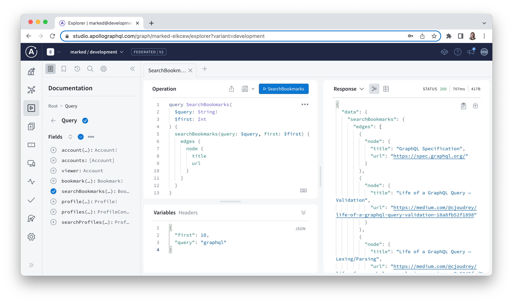

Chapter 9: Managed Federation with Apollo Studio
In this chapter, we will:
- Set up a free Apollo Studio account
- Create a deployed graph in Apollo Studio and publish subgraph schemas to it
- Configure the existing gateway to run use managed federation
- Gain insight into operation latency by capturing federated traces and sending that data to Apollo Studio
- Use schema checks in Apollo Studio to validate proposed changes
Why Use Managed Federation?
We’ve made amazing strides in building out the Marked GraphQL API over the last eight chapters. It now consists of four distinct subgraphs with all of the queries and mutations required for client developers to build out the essential features of any front-end app for Marked. As we built out these subgraphs, we relied on IntrospectAndCompose to poll the subgraphs and recompose the supergraph schema on the fly in the gateway as we worked. This approach worked well enough but—as alluded to in Chapter 1—a production environment will require a different approach.
To better understand why, let’s pause and consider what a production-ready workflow would look like. GraphQL APIs are meant to be flexible enough to evolve in response to changing product requirements, and federated graphs are no exception. If a client application needs to add a field on the root Query type to support a new feature, then the applicable subgraph should be able to make that update and trigger the recomposition of the supergraph schema.
But what happens if a subgraph makes a change that results in a composition failure, such as removing an entity type that other subgraphs have extended with computed fields? This scenario would cause the gateway to throw an error and lead to downtime for the API. Ideally, we would have an easy way to detect potential issues with composition before the gateway is aware of them so that subgraph service owners can resolve them before deploying their updated code to production.
This is where a schema registry such as Apollo Studio comes in. A schema registry will act as the source of truth for API’s type definitions and help subgraph teams collaborate more fluidly as they update their portions of the schema. And when teams contribute changes to their subgraphs where they unknowingly break composition, the schema registry can also detect these errors in advance and continue to serve the previous composable version of the supergraph schema until further changes are made that allow composition to proceed. Ultimately, a schema registry allows us to maintain separation of concerns within the gateway itself by isolating supergraph composition from query planning and execution.
A version of our distributed GraphQL API architecture that incorporates managed federation will end up looking something like this:
In the sections that follow, we will set up a free Apollo Studio account, publish subgraphs to its schema registry, and reconfigure the existing gateway to use managed federation as pictured in the above diagram.
Publish Subgraphs to a Deployed Graph in Apollo Studio
To set up managed federation, you will need an Apollo Studio account. Apollo Studio offers a generous free tier that will allow us to manage the Marked schema in its registry and run millions of queries against our graph every month. You can sign up for an Apollo Studio account by following these quick steps.
First, navigate to https://studio.apollographql.com/ to register for a new account:
Click the “Create an account” link and then create a new account either using your email or GitHub account. Once your account has been created, you’ll have the option to choose a “Deployed” or “Development” graph. A deployed graph can take advantage of Apollo Studio features such as its schema registry and metrics reporting, and is typically meant for team collaboration. A development graph will poll your development server for schema updates as you work, much like the Sandbox version of Apollo Studio Explorer does but provides an extended feature set compared to Sandbox.
For our purposes, we will choose a deployed graph because we want to publish Marked’s subgraph schemas to the registry. It’s also important to note that a single graph in Apollo Studio will contain multiple subgraphs. In other words, we only need to create one graph for the entire Marked GraphQL API and we will publish all of its subgraph schemas to that graph. Give the graph a unique name, leave the default “Supergraph” option selected in the “Graph Architecture” drop-down, and click the “Next” button below it to proceed:
A new modal will appear with instructions on explaining how to publish subgraph schemas to the Apollo Studio schema registry:
As these instructions suggest, we need to have the Rover CLI installed to publish the subgraph’s schema into the registry. If you haven’t installed Rover yet, then you can refer to the “Required Software” section of the Preface for instructions on how to do this.
Before publishing a subgraph schema, we need to familiarize ourselves with one more important Apollo Studio concept called a variant. A variant typically corresponds to some environment where we would run a GraphQL API. For example, a graph might have development and production variants. A graph can have many different variants if needed, which means there may be just as many slightly different versions of a graph’s schema depending on what state the corresponding environments are in, but typically, there will be a high degree of overlap between the variants. Related to variants, a graph ref is comprised of the ID of the graph plus a variant name with an @ symbol as a delimiter.
The first subgraph schema that we’ll push to Apollo Studio will be from the accounts service and we’ll use the rover subgraph publish command to do so. There are two different ways that we can tell Rover where to find this subgraph’s schema. The first is to point to the .graphql file that contains the SDL-based type definitions for the subgraph, and the second is to send an introspection query to the accounts service’s endpoint and pipe the output into the rover subgraph publish command. We will choose the second option as we’d quickly discover that we have a composition error in Apollo Studio when simply pointing to the schema.graphql file because the definitions for the authorization-related directives aren’t directly available in there (recall that they are concatenated onto the subgraph SDL in accounts/src/index.js instead).
Using the following example command, replace the APOLLO_KEY variable and the graph ID portion of the graph ref with the values that correspond to the graph you just created. The directory location will not matter when you run this command:
rover subgraph introspect http://localhost:4001 |
APOLLO_KEY=XXXXXXXXXXXX \
rover subgraph publish <YOUR_GRAPH_ID>@development \
--name accounts \
--schema - \
--routing-url http://localhost:4001
If you omit the @ symbol and the variant name and only specify the graph ID as an argument to publish, then Apollo Studio will create a default variant called current.
Additionally, instead of using the Graph API key provided in the “Publish your schema using Federation” modal, you can create a Personal API key for Apollo Studio and save to a configuration profile using the rover config auth command so that you don’t need to set the APOLLO_KEY variable each time you run a Rover command for any graph that you create in your Apollo Studio organization.
Over in Apollo Studio now, if we refresh the browser and navigate to the Schema page and look under the Reference tab, then we should see that the types and fields that are defined in the accounts service are now in the registry:
Under the SDL tab, we can also see all three representations of the accounts service’s schema as an API schema, supergraph schema, and a subgraph schema. If we proceed with publishing the remaining subgraphs now in the order that we built them, the subgraphs will compose neatly into the supergraph schema in the registry. But let’s publish the bookmarks service’s schema next instead to see what happens when we publish a new subgraph schema that breaks supergraph composition in Apollo Studio:
rover subgraph introspect http://localhost:4003 |
APOLLO_KEY=XXXXXXXXXXXX \
rover subgraph publish <YOUR_GRAPH_ID>@development \
--name bookmarks \
--schema - \
--routing-url http://localhost:4003
We will see the following error output in the terminal:
WARN: The following build errors occurred:
EXTERNAL_MISSING_ON_BASE: Field "Profile.interests" is marked @external on all the subgraphs in which it is listed (subgraph "bookmarks").
Similarly, if we refresh Apollo Studio, then we will see that the “Federated V2” button in the header has turned red. The same error message appears in a modal when we click that button:
This error occurs because we stubbed out the Profile entity in the bookmarks service so we could reference and extend it, but we also added the interests field to that definition with an @external directive applied to support the use of the @requires directive for the computed recommendedBookmarks field. However, the @external directive indicates to the gateway that the interests field is referenced by the bookmarks service, but it is not resolvable from that service—or any service at the moment, for that matter—which breaks composition.
What we have seen here is a key feature of managed federation. We attempted to publish a change to the schema registry that breaks composition but Apollo Studio doesn’t allow the supergraph schema to be updated until the issue is resolved. That means that a gateway instance running in managed mode will continue to serve the schema exactly as it was when we initially published the accounts service’s schema, and Apollo Studio will wait until the composition error is resolved before providing an updated supergraph SDL to the gateway. This is a very important feature to prevent breaking changes from being shipped to a gateway in production.
We can fix this error by publishing the profiles service’s schema next:
rover subgraph introspect http://localhost:4002 |
APOLLO_KEY=XXXXXXXXXXXX \
rover subgraph publish <YOUR_GRAPH_ID>@development \
--name profiles \
--schema - \
--routing-url http://localhost:4002
Composition will succeed now that the interests field can be resolved by profiles service and we will be able to see all three subgraph schemas in Apollo Studio:
Lastly, we can publish the workflows service’s schema:
rover subgraph introspect http://localhost:4004 |
APOLLO_KEY=XXXXXXXXXXXX \
rover subgraph publish <YOUR_GRAPH_ID>@development \
--name workflows \
--schema - \
--routing-url http://localhost:4004
Before moving on, check the Schema page in Apollo Studio to confirm that all four subgraphs are now composed into the supergraph schema.
Configure Apollo Gateway to Run in Managed Mode
Now that the schema is fully composed in the Apollo Studio schema registry, we can update the gateway configuration to use managed federation instead. Doing so only requires two updates to the gateway service’s code. The first step is adding the graph API key as a variable named APOLLO_KEY in its .env file along with an APOLLO_GRAPH_REF variable to indicate which graph and variant from the schema registry should be used with this instance of the gateway:
gateway/.env
APOLLO_KEY=XXXXXXXXXXXX
APOLLO_GRAPH_REF=<YOUR_GRAPH_ID>@development
Next, we no longer need to compose the supergraph SDL at runtime in the gateway, so we can remove the supergraphSdl option from it. The updated ApolloGateway constructor will only contain the buildService option now:
gateway/src/config/apollo.js
// ...
function initGateway(httpServer) {
const gateway = new ApolloGateway({
buildService({ url }) {
return new RemoteGraphQLDataSource({
apq: true,
url,
willSendRequest({ request, context }) {
request.http.headers.set(
"user",
context.user ? JSON.stringify(context.user) : null
);
}
});
}
});
// ...
}
export default initGateway;
Upon restarting the gateway, we should see a message logged to the terminal like this:
gateway/
# ...
Apollo usage reporting starting! See your graph at https://studio.apollographql.com/graph/marked-elkcew@development/
Gateway ready at http://localhost:4000/
With that, the Marked GraphQL API is officially running in managed mode and the gateway will poll Apollo Uplink for supergraph updates and hot-reload those changes in the gateway without requiring it to restart.
Something interesting to note in the logged message above is that by setting up managed federation we have also enabled usage reporting to Apollo Studio. Usage reporting means that the gateway will send federated trace data to Apollo Studio so we can understand how the API is being used and where potential performance issues may exist. Tracing data also helps power another important feature in Apollo Studio that we will explore in the next section called “Schema Checks.”
To see how this tracing data is put to use in Apollo Studio, we’ll have to run a few operations against our API. However, rather than using the Sandbox version of Explorer, this time we will use the Explorer interface that’s built into Apollo Studio for use with deployed or development graphs. It can be accessed using the same icon in the lefthand menu while logged into Apollo Studio.
Before running any operations, let’s set some headers first. In the “Headers” panel below the editor, add the apollographql-client-name header with a value of Apollo Studio Explorer and an apollographql-client-version of 1.0. These headers will help enrich our traces with client-specific metadata so we can understand how the API is being used and by whom as well. Now add the following operation document and variables to the Explorer editor:
GraphQL Query
query SearchBookmarks($query: String!, $first: Int) {
searchBookmarks(query: $query, first: $first) {
edges {
node {
title
url
}
}
}
}
Query Variables
{
"query": "graphql",
"first": 10
}
When you run the operation for the first time you will be prompted to set an endpoint for the API so add http://localhost:4000 to the connection settings, click the “Save” button in the modal, and then run the operation several times:

We can jump over to the operations tab now and see the SearchBookmarks query listed in the “Last day overview” section:
If we click on that operation, then we can see that the named “Apollo Studio Explorer” client has run the operation a number of times:
Similarly, if we scroll down the page we will see the request latency distribution:
Back in Explorer, we can get more granular insights into how various fields contribute to request latency by taking advantage of some of the advanced settings here and turning on editor hints:
A key thing to note about using the full-featured version of Explorer with a deployed graph is that Apollo Studio will not automatically poll a development environment for updates—we would need to publish a subgraph schema again if we made any changes to it. Development graphs, however, can poll a local endpoint for updates while providing access to a broader range of features than the Sandbox version of Explorer does.
Safely Evolve Subgraphs with Schema Checks
Now that all of the subgraph schemas have been published to the registry, the gateway is running in managed mode, and we are reporting usage data to Apollo Studio, let’s imagine what would happen when the Marked app is deployed to production one day. First, we would want to create a separate variant in Apollo Studio for the production version of the schema. Most commonly, subgraph schema publication would be automated during some kind of deployment workflow. Doing so would allow us to continue to work on the development variant without affecting the version of the schema that’s exposed to clients in production environments.
Now let’s imagine that the Marked application has been serving client traffic for some time and we now need to make a change to the schema. This change may be necessary due to a new product requirement or a change in one of the underlying data sources that back a subgraph. GraphQL APIs are meant to evolve over time by design, but how can we be sure that the proposed updates won’t cause breaking changes for clients that may depend on the affected types and fields?
This is where schema checks come in. Schema checks are another feature of Apollo Studio (recently made free for any account type) that allow you to statically analyze proposed changes to a subgraph schema against a slice of client traffic for a specific time range. The schema check will flag any potentially breaking changes based on this traffic and it will also allow us to identify any new compositions issues before the subgraph schema is republished.
To try out the schema check process, let’s begin by making what we would expect to be a non-breaking change to the bookmarks service’s schema. Specifically, we will set the title field’s output type to be a non-nullable String now:
bookmarks/src/graphql/schema.graphql
# ...
"""
A bookmark contains content authored by a user.
"""
type Bookmark {
# ...
"A title to describe the bookmarked content."
title: String!
"The URL of the page to be bookmarked."
url: URL!
}
# ...
We expect this change to be non-breaking because any clients that depend on this field can still expect it to be there. In fact, now that the field is non-nullable these clients can be even more certain that a title value will be available when requested.
Without publishing this change to the Apollo Studio registry yet, let’s run a schema check using the rover subgraph check command to verify that this change is safe:
rover subgraph introspect http://localhost:4003 |
APOLLO_KEY=XXXXXXXXXXXX \
rover subgraph check <YOUR_GRAPH_ID>@development \
--name bookmarks \
--schema -
We should see the following output in the terminal, indicating that the proposed change to the bookmarks service’s schema is safe:
You can see the full list of types of schema changes in the Apollo Studio documentation.
We can also see a record of the outcome of this schema check on the Checks page in Apollo Studio:
Now let’s try running a check against a potentially breaking change by changing the output type of the non-null url field to nullable so that there is no longer a guarantee to clients who have queried this field that a value will be available:
bookmarks/src/graphql/schema.graphql
# ...
"""
A bookmark contains content authored by a user.
"""
type Bookmark {
# ...
"A title to describe the bookmarked content."
title: String!
"The URL of the page to be bookmarked."
url: URL
}
# ...
Next, we’ll rerun the schema check:
rover subgraph introspect http://localhost:4003 |
APOLLO_KEY=XXXXXXXXXXXX \
rover subgraph check <YOUR_GRAPH_ID>@development \
--name bookmarks \
--schema -
And we should see the following output this time:
Over in Apollo Studio, we can also see the failed check:
If we click on the check, we can see detailed information about why the check failed:
Additionally, if we scroll down this page, then we can also see what clients are affected by this change. This insight can help us make an informed decision about whether we want to override this potential breaking change if flagged again in the future or if we need to follow up with the identified clients before publishing this change to the schema.
Summary
In this chapter, we explored the use case for managed federation, particularly for production environments where it’s important to validate subgraph schema changes in advance to ensure that they won’t break composition of the supergraph for a running gateway. We then published the accounts, bookmarks, profiles, and workflows subgraphs to the Apollo Studio schema registry and configured the existing Apollo Gateway to use managed federation automatically by adding APOLLO_KEY and APOLLO_GRAPH_REF environment variables to it.
We also took advantage of some additional features of Apollo Studio that are enabled by the federated traces that the gateway sends to it via its usage reporting mechanism. Lastly, we used schema checks to determine that proposed changes to a subgraph schema will be safe for clients that are actively querying the API and will result in a valid supergraph composition.
In the final chapter, we’ll wrap up our survey of advanced GraphQL techniques by trying out the Rust-based Apollo Router, which is a newer addition to Apollo’s suite of open-source software.